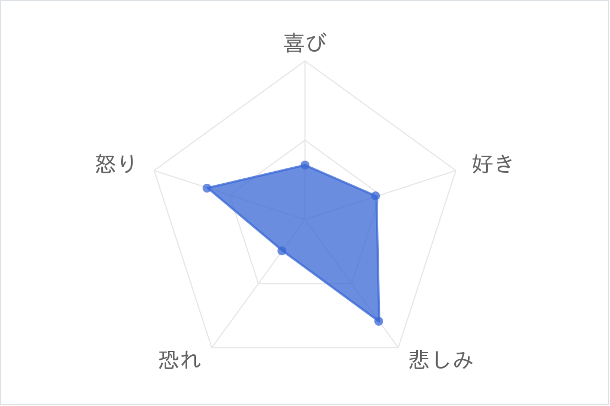
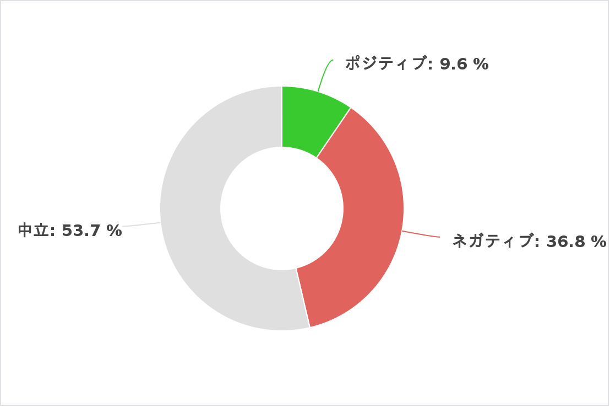

1990年代の分析
経済低迷と社会変革が交錯した「失われた10年」と、テクノロジーと文化が大きく進化した時代
単語の色は品詞の種類で異なっており、青色が名詞、赤色が動詞、緑色が形容詞、灰色が感動詞を表しています。
分析結果
感情のレーダーチャート
日本がバブル経済崩壊を経験した後、経済の不安定さや社会の停滞が続き、人々の生活には多くの苦しみや不安が影を落としました。このような状況の中で、未来に対する悲観的な考え方が広がっていったのです。この影響は音楽や歌詞にも表れ、「悲しみ」や「切なさ」といった感情がより多く反映されるようになりました。
センチメント分析
1990年代の歌詞には、ポジティブな要素も少し含まれているものの、全体としてはネガティブな感情や中立的な感情が多くを占めていることがわかります。この時代の音楽には感情の多様性が表れており、各曲には喜びや「好き」といった明るい感情だけでなく、悲しみや恐れといった深い感情も込められています。
総括と影響
1990年代の楽曲も引き続き「愛」や「人との関わり」が大きなテーマであったことがわかります。特に「抱きしめる」、「君」、「あなた」といった言葉が頻繁に登場していることから、個人的で感情的なつながりが重視されていた様子がうかがえます。また、「夢」や「忘れる」というキーワードからは、未来への希望や過去への思い、失恋や喪失感といったテーマも重要視されていたことがわかります。 さらに、「信じる」、「二人」といった言葉が強調されていることから、信頼や絆、未来への期待が強く歌われていたことも特徴的です。全体的に、愛や切なさ、儚さといった感情が深く描かれている一方で、希望や未来に向かう強さも見られる時代です。このデータから、1990年代の音楽はバランスの取れた感情表現がされていたことがわかります。1980年代よりもわずかにポジティブな感情が増えている一方で、ネガティブな感情も依然として楽曲の大きな部分を占めていました。